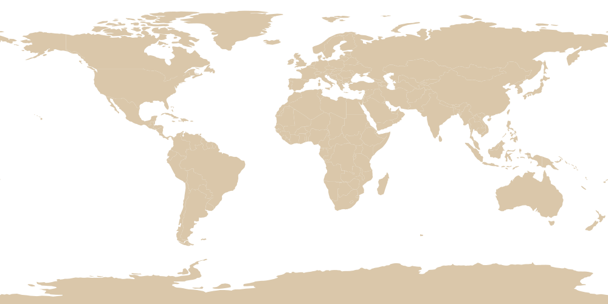

РОДИНА НАШЕГО КОФЕ
Эфиопская Арабика —
от истоков
до вашей чашки
Мы специализируемся на прямых поставках органически выращенного зелёного кофе сорта Арабика из колыбели этого прекрасного напитка — Эфиопии.
РОДИНА НАШЕГО КОФЕ
Мы специализируемся на прямых поставках органически выращенного зелёного кофе сорта Арабика из колыбели этого прекрасного напитка — Эфиопии.

Поверните глобус